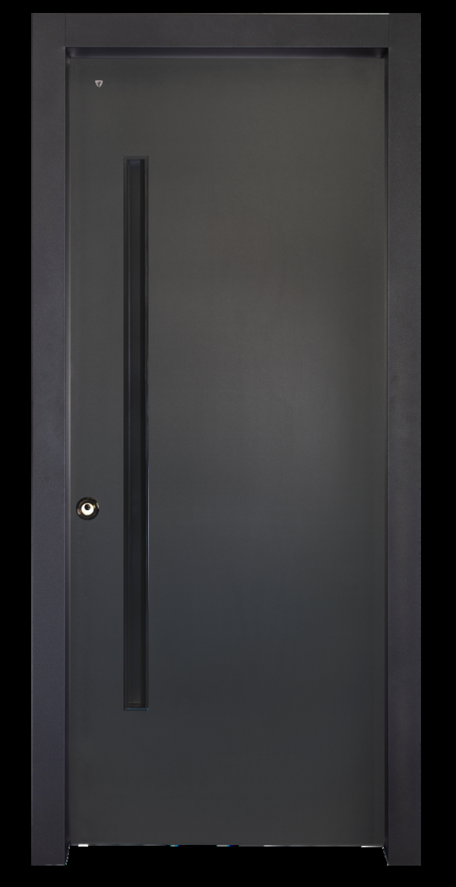

<!doctype html><meta charset="utf-8">
<style>
 body{background:#F5F3EF;margin:0;padding:20px;font:13px system-ui}
 .row{display:flex;gap:24px;align-items:flex-start}
 img{height:900px;object-fit:contain;background:#F5F3EF}
 iframe{width:520px;height:900px;border:0}
 .blur img,.blur iframe{filter:blur(12px)}
</style>
<figure>
  <div class="row">
    
    <iframe src="../index.html?v=2&c=ral-7016&w=none&g=none&n=channel&s=standard&h=right-in&amp;bare=1" scrolling="no"></iframe>
  </div>
</figure>